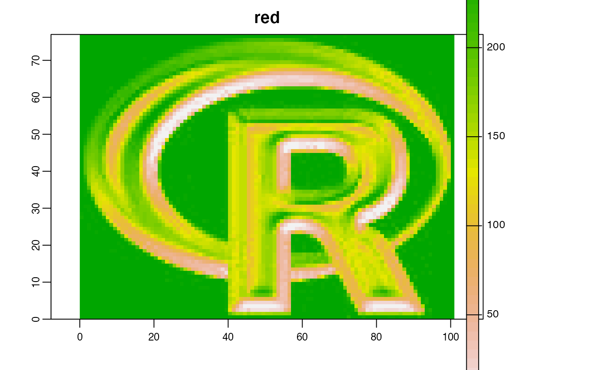
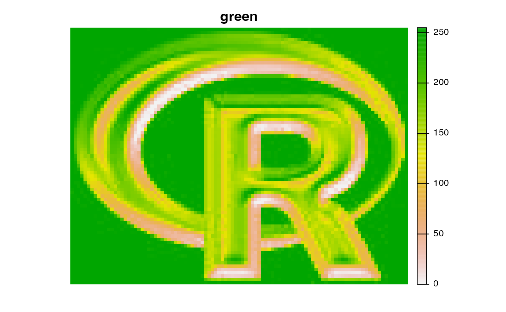
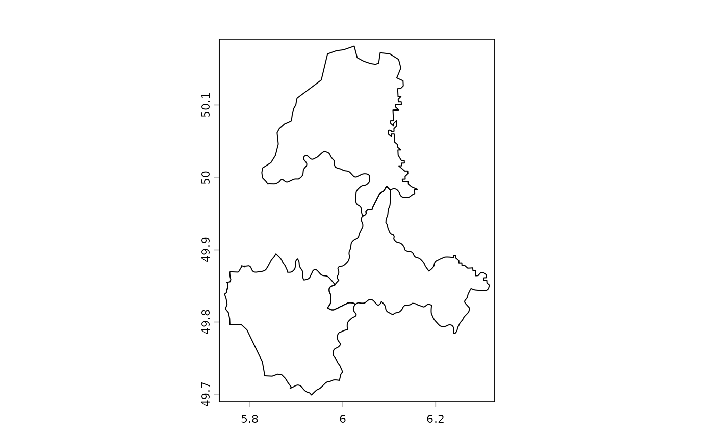

Animate a map
animate.RdAnimate (sequentially plot) the layers of a SpatRaster, or a SpatVectorCollection, or the variables or geometries of a SpatVector, to create a movie.
# S4 method for class 'SpatRaster'
animate(x, pause=0.25, main, range=NULL, maxcell=50000, n=1, ...)
# S4 method for class 'SpatVector'
animate(x, pause=0.25, main="", n=1, vars=NULL, range=NULL, add=NULL, ...)
# S4 method for class 'SpatVectorCollection'
animate(x, pause=0.25, n=1, vars=NULL, range=NULL, ext=NULL, add=NULL, ...)Arguments
- x
SpatRaster or SpatVector
- pause
numeric. How long should the pause be between layers?
- main
title for each layer. For SpatRaster, if not supplied, the z-value is used if available. Otherwise the names are used.
- range
numeric vector of length 2. Range of values to plot, If
NULLthe range of all layers is used for rasters, or all variables for vectors if they are all numeric. IfNAthe range of each individual layer is used- maxcell
positive integer. Maximum number of cells to use for the plot. If
maxcell < ncell(x),spatSample(type="regular")is used before plotting- n
integer > 0. Number of plotting loops
- vars
numeric or character to indicate the variables to animate. If this is NULL, the geometries are animated instead
- ext
SpatExtentobject (or an object for whichextreturns one) setting the spatial extent of the plot.- add
logical. Add the geometries to the current plot? When looping over geometries: if
TRUE, add all geometries to the current plot. IfNULL,addis set toFALSEfor the first geometry andTRUEfor the remaining ones. This argument is ignored whenvarsis notNULL- ...
additional arguments passed to
plot
Value
None
See also
Examples
r <- rast(system.file("ex/logo.tif", package="terra"))
animate(r, n=1)


v <- vect(system.file("ex/lux.shp", package="terra"))
animate(v[1:3, ], n=1, pause=0.3)

# animate(v, vars=names(v))
s <- svc(as.lines(v[3:5,]), v, v[1:3,], as.points(v))
animate(s, col="blue", alpha=0.3, pause=0.3)
 # you can save an animation to file like this
# animation::saveGIF(terra::animate(v), "animation.gif")
# you can save an animation to file like this
# animation::saveGIF(terra::animate(v), "animation.gif")